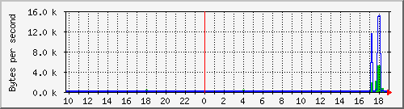
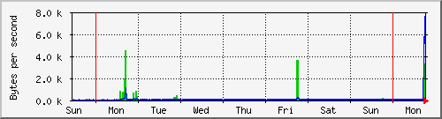
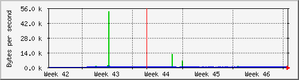
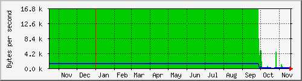

主機流量統計表
接收的封包流量：代表伺服器接接收來自其他機器傳入的總流量
發送的封包流量：代表伺服器送給其他用戶的封包總流量
The statistics were last updated Monday, 20 November 2017 at 19:00,
at which time 'station0-83.gocloud.vm' had been up for 1:09,1user,.
`Daily' Graph (5 Minute Average)

|
Max |
Average |
Current |
| 接收的封包流量 |
5192.0 Byte (0.0%) |
139.0 Byte (0.0%) |
163.0 Byte (0.0%) |
| 發送的封包流量 |
14.9 kByte (0.0%) |
248.0 Byte (0.0%) |
72.0 Byte (0.0%) |
`Weekly' Graph (30 Minute Average)

|
Max |
Average |
Current |
| 接收的封包流量 |
4538.0 Byte (0.0%) |
97.0 Byte (0.0%) |
1145.0 Byte (0.0%) |
| 發送的封包流量 |
7577.0 Byte (0.0%) |
58.0 Byte (0.0%) |
2595.0 Byte (0.0%) |
`Monthly' Graph (2 Hour Average)

|
Max |
Average |
Current |
| 接收的封包流量 |
53.0 kByte (0.0%) |
238.0 Byte (0.0%) |
57.0 Byte (0.0%) |
| 發送的封包流量 |
1218.0 Byte (0.0%) |
15.0 Byte (0.0%) |
41.0 Byte (0.0%) |
`Yearly' Graph (1 Day Average)

|
Max |
Average |
Current |
| 接收的封包流量 |
16.7 kByte (0.0%) |
14.6 kByte (0.0%) |
70.0 Byte (0.0%) |
| 發送的封包流量 |
1311.0 Byte (0.0%) |
1139.0 Byte (0.0%) |
38.0 Byte (0.0%) |
| GREEN ### |
Incoming Traffic in Bytes per Second |
| BLUE ### |
Outgoing Traffic in Bytes per Second |